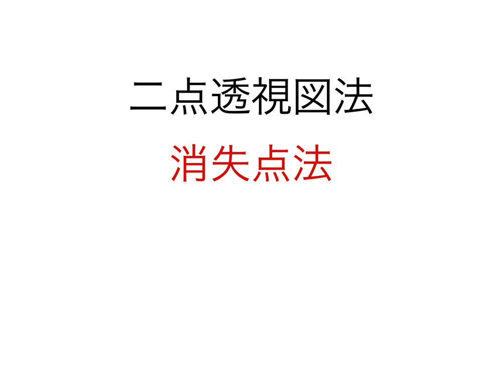
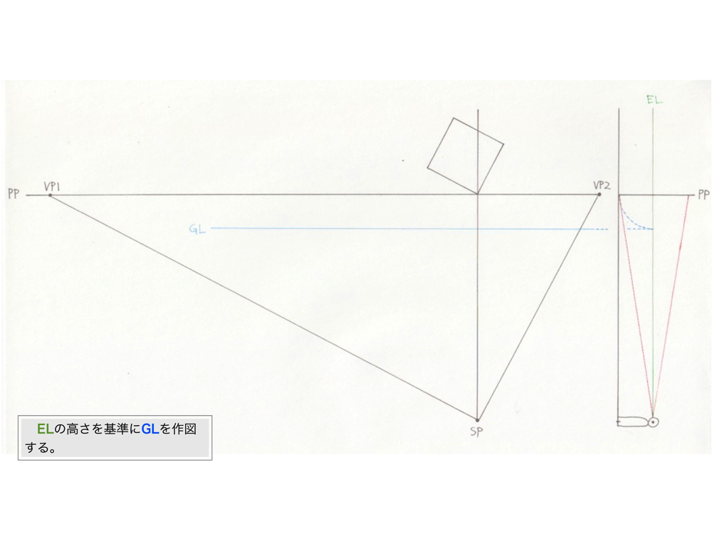
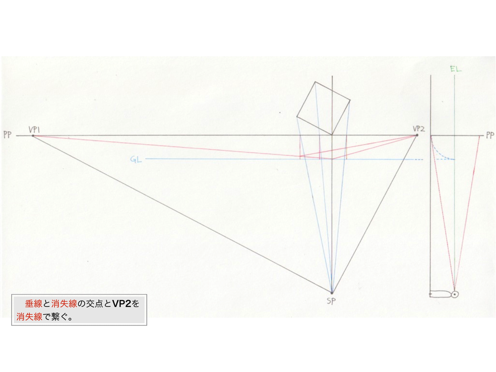

<!--#include virtual="/include/meta.html" -->
<meta name="description" content="全てのパース技法の解説と実例によって理解を深め、お絵描きに応用する方法を模索します。">
<title>建築パースを徹底研究！パース理論の基礎知識と描き方 | お絵描きホーホー論</title>
<meta property="og:title" content="建築パースを徹底研究！パース理論の基礎知識と描き方 | お絵描きホーホー論">
<meta name="twitter:title" content="建築パースを徹底研究！パース理論の基礎知識と描き方 | お絵描きホーホー論">
<meta property="og:url" content="http://www.oekaki-hoho-ron.com/drawing-procedure-of-construction-perspective/index.html">
<meta name="twitter:site" content="http://www.oekaki-hoho-ron.com/drawing-procedure-of-construction-perspective/index.html">
<meta property="og:image" content="http://www.oekaki-hoho-ron.com/drawing-procedure-of-construction-perspective/00.png">
<!--#include virtual="/include/header.html" -->
<article>

<!--#include virtual="/include/ads-in-article.html" -->








<!--#include virtual="/include/ads-in-article.html" -->

</article>
<!--#include virtual="/include/footer.html" -->